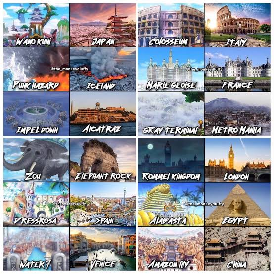

Projeto One Piece
Biografia
Tripulação
Aliados
Inimigos
Ilhas
Poderes
Sagas
Curiosidades
Galeria
Mídia
Contato
Ilhas do Novo Mundo e Paradise
Exploração das Ilhas

Ilhas marcantes e cenários da Grand Line.
Vídeo em Destaque: Ilhas da Jornada
Seu navegador não suporta a tag de vídeo.